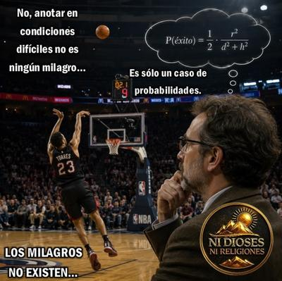

Desde la perspectiva de la estadística actuarial y la ciencia de datos, uno de los errores cognitivos más frecuentes de las personas religiosas, consiste en interpretar los eventos de baja probabilidad como si fueran intervenciones sobrenaturales, como excepciones o interrupciones a las leyes de la naturaleza. En lugar de comprender que un fenómeno improbable sigue siendo parte del comportamiento normal de un universo gobernado por probabilidades, causalidad y azar estadístico, muchos creyentes convierten esos sucesos en «milagros», «señales divinas» o «castigos celestiales». Y el problema no es que existan eventos extraordinarios; el problema es la interpretación mágica que se hace de ellos.


Los seres humanos vivimos demasiado poco tiempo, y observamos una fracción demasiado pequeña de la realidad, como para desarrollar una intuición adecuada sobre las probabilidades extremas. Y nuestra experiencia cotidiana transcurre en lo que el biólogo británico Richard Dawkins (n. en 1941) llamó el «mundo medio»: ese estrecho rango de fenómenos que nuestros cerebros evolucionaron para manejar. Vemos tamaños medianos, velocidades medianas, tiempos medianos y probabilidades medianas. Sin embargo, el universo real no es mediano, ni funciona limitado a nuestra intuición psicológica. Existen escalas astronómicas de tiempo, cantidad y combinaciones posibles, en las cuales eventos extremadamente improbables no sólo pueden ocurrir, sino que terminan siendo inevitables.
Tal como explicó Dawkins en su libro El espejismo de Dios (The God Delusion), «nada es totalmente imposible», salvo las contradicciones lógicas o físicas absolutas. Por lo que un «milagro», desde una perspectiva probabilística, no es más que un evento con una frecuencia extremadamente baja. Y aparece aquí el gran conflicto entre pensamiento crítico y pensamiento mágico-supersticioso: el creyente interpreta la rareza como «intención divina», mientras el estadístico la interpreta como una consecuencia natural de distribuciones probabilísticas complejas.
Esto puede comprenderse fácilmente con ejemplos simples. Supongamos una lotería donde deben acertarse 6 números entre 38 posibles. La probabilidad de ganar el premio mayor es aproximadamente de 1 entre 2.760.681 combinaciones, es decir, cerca de 0,0000362%. Sin embargo, aunque la probabilidad individual sea ínfima, alguien eventualmente gana, porque millones de personas participan, y los sorteos se repiten constantemente. Así que, desde el punto de vista matemático, el hecho extraordinario no es que alguien gane, sino que la gente siga creyendo que el ganador recibió una atención especial del universo (¿que estaba conspirando a su favor?). Un creyente ganador dice: «Dios quiso bendecirme». Pero el estadístico responde: «Dado un número suficientemente grande de participantes y repeticiones, era inevitable que alguien ganara».
Pero lo más curioso es que ese razonamiento religioso funciona sólo en una dirección emocionalmente conveniente. Cuando alguien sobrevive a un accidente aéreo, muchos lo llaman «milagro». Pero cuando cientos mueren en el mismo accidente, nadie habla de «milagro inverso». Aparecen allí las frases comodín: «Dios tiene un propósito», «Los planes de Dios son misteriosos» o «Dios lo quería en el cielo». En otras palabras, cualquier resultado sirve para confirmar la hipótesis religiosa. Y una hipótesis que explica absolutamente todo, en realidad no explica nada.
Lo mismo ocurre con los rayos. El riesgo anual de que una persona sea alcanzada por un rayo, varía según el país y las condiciones climáticas, pero suele estimarse aproximadamente entre 1 en 1 millón, y 1 en 3 millones, por año. La cifra depende del contexto geográfico y temporal. Pero aparece aquí nuevamente la inconsistencia psicológica: si alguien sobrevive a un rayo, muchos creyentes hablan de «protección divina»; pero si muere, entonces se apela al «misterio insondable de Dios». Nunca se concluye que simplemente ocurrió un fenómeno atmosférico estadísticamente raro, pero perfectamente posible.
Desde la ciencia de datos, sabemos que los seres humanos poseen múltiples sesgos cognitivos que distorsionan la percepción de las probabilidades. Y uno de ellos es el sesgo de confirmación: recordar selectivamente los casos que parecen validar nuestras creencias, e ignorar los millones de casos ordinarios que no producen ninguna impresión emocional.
Entre los usuarios de las máquinas tragamonedas de los casinos se observa ese sesgo cognitivo: ellos descartan las múltiples veces que pierden, y conservan en su memoria sólo las raras ocasiones en que ganan. Un fenómeno que se conoce específicamente como «sesgo de memoria selectiva». Y en psicología cognitiva, esto forma parte de lo que se denomina el sesgo de optimismo o, más ampliamente, la falacia del jugador.
Sin embargo, la realidad probabilística es implacable: en un planeta con miles de millones de personas, y ocurriendo simultáneamente millones de eventos diarios, los sucesos extremadamente improbables dejan de ser sorprendentes. Si suficientes personas juegan a la lotería, alguien ganará. Si suficientes tormentas eléctricas ocurren durante suficiente tiempo, eventualmente caerá un rayo sobre alguien que estaba orando; sobre un ateo, sobre una iglesia o sobre un árbol vacío. No porque exista una intención sobrenatural detrás, sino porque las probabilidades, incluso las diminutas, terminan materializándose, cuando el número de oportunidades es gigantesco.
La estadística actuarial trabaja precisamente con esa realidad incómoda: eventos raros pero inevitables. Las compañías de seguros no calculan «milagros»; calculan frecuencias, distribuciones y riesgos. Saben que habrá incendios improbables, accidentes improbables y enfermedades improbables. Y precisamente porque esos eventos improbables ocurren, las aseguradoras existen. Ningún actuario necesita recurrir a demonios, ángeles o designios divinos para explicar por qué ocurren eventos extraordinarios. Basta comprender cómo funciona la probabilidad en grandes poblaciones y largos períodos de tiempo.
Por eso el pensamiento crítico adopta una posición mucho más prudente y racional. Reconoce que existen fenómenos todavía inexplicados, pero se niega a rellenar automáticamente esos vacíos con magia, dioses o supersticiones. «Inexplicado» no significa «sobrenatural». Significa simplemente que aún no comprendemos completamente las causas o mecanismos involucrados. La historia de la ciencia está llena de fenómenos que antes parecían milagrosos y hoy tienen explicaciones naturales: eclipses, enfermedades, rayos, terremotos, trastornos mentales, epidemias y hasta la diversidad de la vida.
El supersticioso mira lo improbable y dice: «Eso desafía las leyes naturales». El científico responde: «No, sólo desafía tu intuición estadística». Y probablemente ésa sea una de las diferencias fundamentales entre mentalidad religiosa y pensamiento científico: la primera necesita atribuir intención; la segunda acepta humildemente la complejidad del azar, y la inmensidad de un universo, donde incluso lo extraordinario termina siendo, tarde o temprano, perfectamente normal.
[Godless Freeman]
Comentarios
Comments powered by Disqus